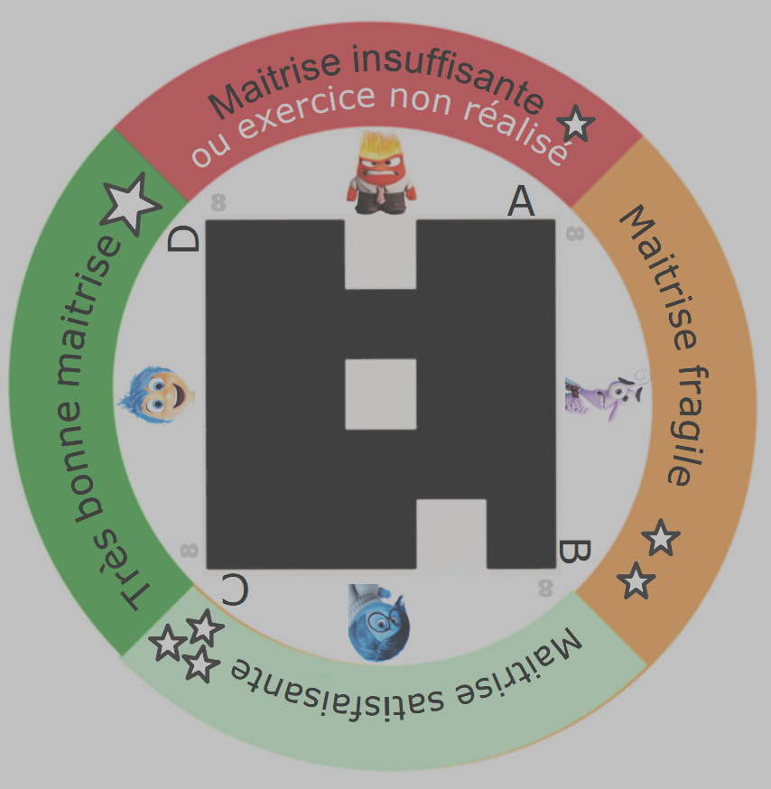
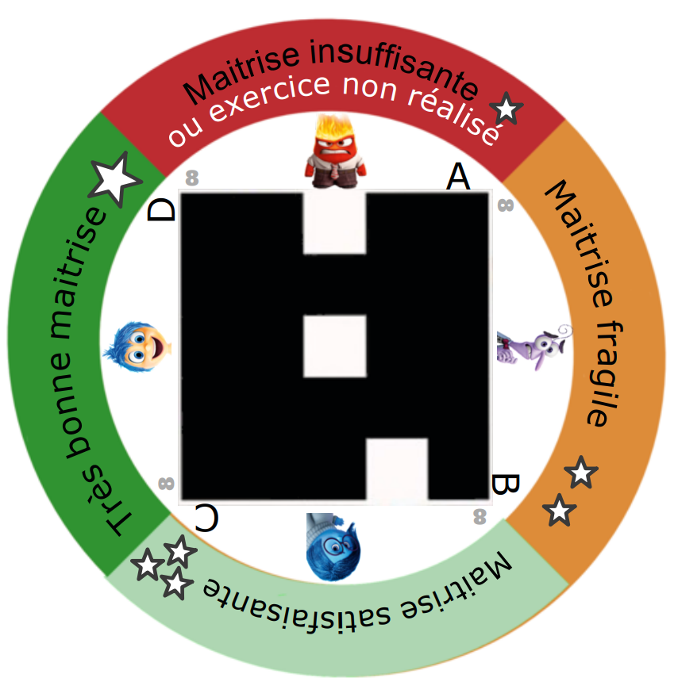
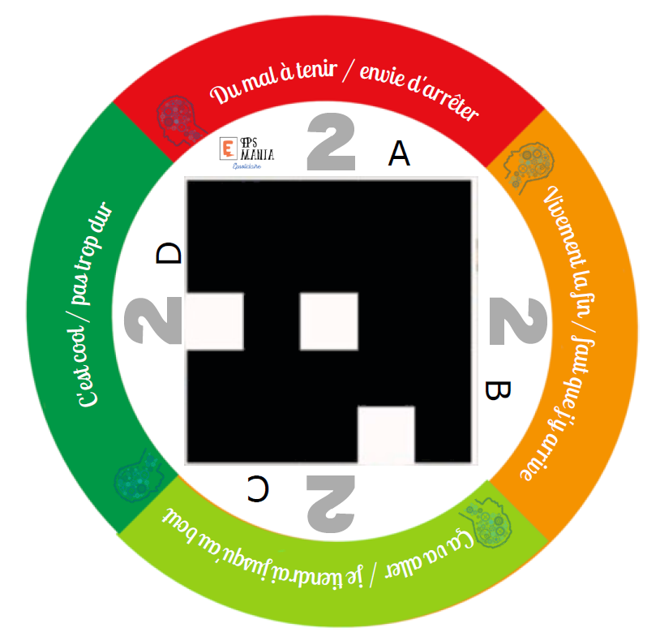
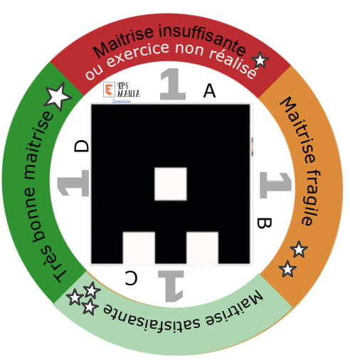
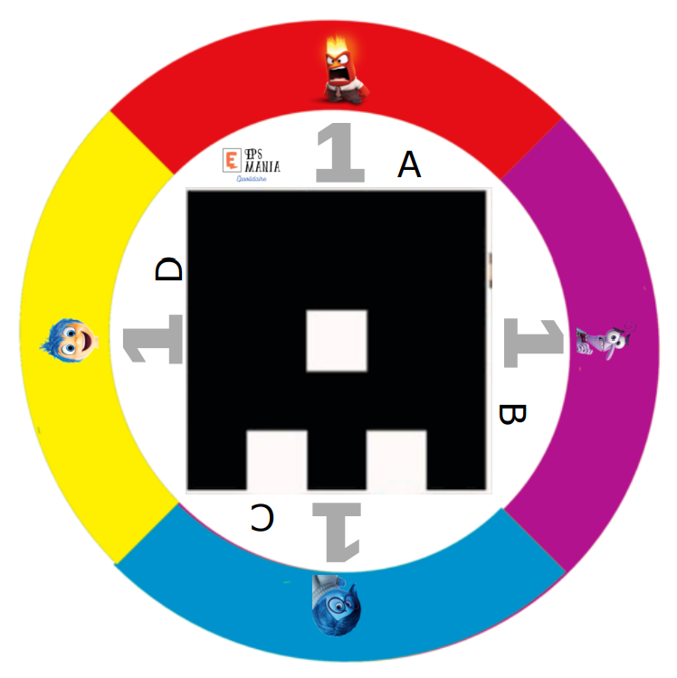

Ressources EPS Numérique en EPS
Plickers en EPS

Utilisation de plickers en Eps
Dans cette rubrique, vous trouverez des moyens de créer vos propres Plickers ainsi que des exemples de détournements pédagogiques
Quelques exemples de plickers




Le principe d'utilisation de Plickers
Les tutos d'Hugo - Application Plickers et un tuto du Pôle EPS & Numérique - Académie de Rouen
Quoi de neuf ?
Plickers est déjà bien connu dans le monde de l'éducation. Je l'utilise depuis des années en Acrosport afin d'obtenir très rapidement, et de manière anonyme, un retour de mes élèves dans leur rôle de ''Juge".
En lisant l'article de Lucie, je découvrais de nouvelles possibilités offertes par Plickers dans le cadre d'un suivi ou d'une auto-évaluation.
En lisant l'article de Lucie, je découvrais de nouvelles possibilités offertes par Plickers dans le cadre d'un suivi ou d'une auto-évaluation.
Comment réaliser ses propres plickers
Encore merci à Webjéjé pour les deux solutions proposées
Vous trouverez un modèle modifiable sur le site d'AVERY stickers rond diamètre 6 cm ref 7104 -> https://www.avery.fr/logiciel/avery-design-print -> lancer le logiciel ->plus tard -> ouvrir un projet enregistré -> depuis mon ordinateur -> uploader le *.avery que vous aurez téléchargé en cliquant ci-dessous
| avery-auto-collant-l7104_v2.avery | |
| File Size: | 3105 kb |
| File Type: | avery |
Vous pouvez également télécharger le générateur de Plickers sur ce lien : Google Play
Liens vers des exemples de plickers à télécharger
- Des Plickers centrés exclusivement sur les émotions de vos élèves. Vous pouvez vous en servir en début de leçon afin de connaitre très rapidement "l'ambiance émotionnelle" de la classe. Vous pouvez les télécharger ici
- Des Plickers pour situer les élèves dans une compétence travaillée, à télécharger en trois séries afin de travailler en ateliers.
Violet + Bleu + Noir - Des Plickers qui combinent les compétences ET les émotions. À télécharger ici
- Des Plickers pour apprendre à étiqueter ses sensations, utiles pour les APSA de la CA5 en EPS. 3 aspects sont mis en avant et repris de l'échelle de Rossi : Psychologique - Cardiovasculaire - Musculoarticulaire